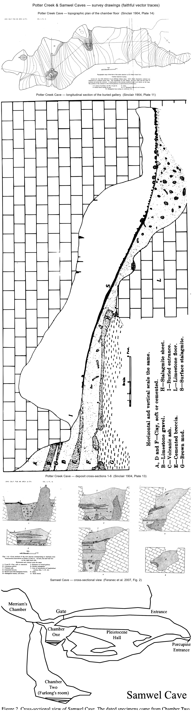

Potter Creek & Samwel Caves — true to the drawings
The documented half of the archive: the cave as the 1903–06 survey actually recorded it. Every model here is a faithful vector trace of a published plate or a to-scale lift of one — nothing is interpretive, nothing is invented.
caves.html.The survey drawings, traced
The published plates reproduced identically as clean vector —
pdftoppm → crop → threshold → potrace → SVG. No pixel originates with a model.


The survey, lifted to 3-D
The traces made navigable — to-scale X3D you can orbit, the model is the survey. Live viewers render in X_ITE.

IndexedLineSet: floor
contours, section lines 1–7, bosses, the altar, the buried galleries.
Bone horizons — the deposit & its fauna
The documented stratigraphic column with fauna pinned only where the literature records a depth; everything else flagged as the mixed assemblage it is.


Live X3D · LIVE tiles open the X_ITE viewer — start the local
server first with ./start_caves.sh (serves this folder on
127.0.0.1:8099); the PDFs open anywhere. Both caves are Winnemem Wintu
sacred sites on the flooded McCloud River; the protected location is not published.